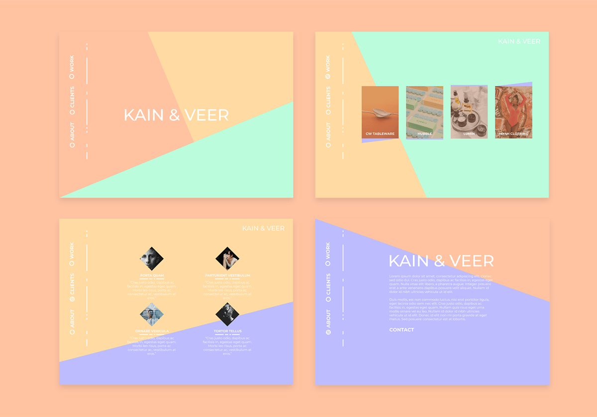
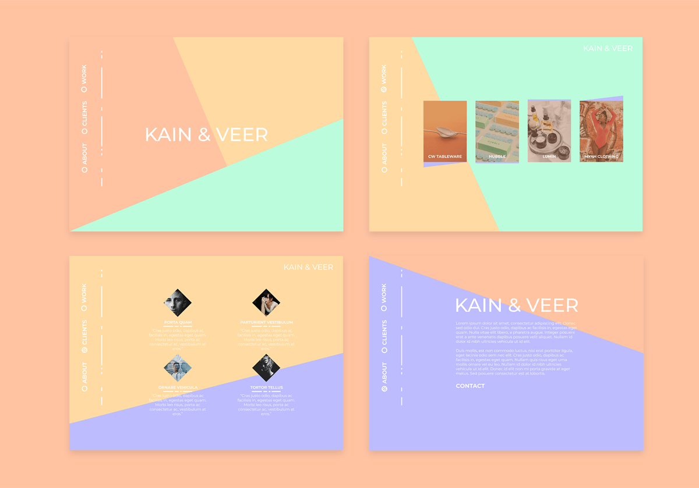

Hello, my name is Craig Melville and I am an engineer and creator. Welcome to my blog, where I share about anything that I'm interested in. Topics mostly include coding, photography, and building stuff.
Posts
Building an LED neon sign
This project like most great projects was brought on by necessity. I was looking for a neon sign and it turns
out it's not that easy to find someone these days that makes custom neon, not to mention the cost.
So after failing to find someone local I naturally ventured onto Etsy, where I found an abundance of "neon" signs.
If you read the descriptions carefully you'll figure out that they are not true neon signs but LED signs that look like neon.
I instantly new this was the kind of thing I was going to have to try and build myself! So here we are,
I've successfully made two "neon" signs and I'm going to share some of the process with you. This will not be a full tutorial
but more so some ideas on how to attempt this yourself.
Materials:
3d printer - there are other methods but this is what I have.
This is arguably the hardest part. The way I made the frame of the sign was by printing a channel that the LED strip
friction fits into. After making two signs this way I can tell you that there are easier ways to do it but for a
nice fit and finish look it's worth going the extra step to do this. The key hear is getting your channel dimensions correct,
make a few test prints before you commit to a particular channel and wall width.
The key to this process is having a starting point that is a single width through out the whole design. So for example if you
are making a text sign you will want to find a font that does not have variations in width from one ligature to another. The best way to avoid this is just
to trace our draw your design in Illustrator with the pen tool so you end up with a design that is essentially one line.
The reason width matters is because making the channel will require you to in some way create a wall runs around your entire design and extrude it up. If the thickness of your design
changes in different areas so will the width of your channel. I've found that a couple millimeters in change isn't noticeable but your have to be careful that your channel doesn't
get too small to fit the LED.
Printing
Printing is pretty straight forward. Large layer hights are fine no one will see it, and a higher infill is preferred for strength and rigidness. I have used
white and black filament and both are fine but I think black draws a little less attention. The hardest part about printing is that you will almost certainly
have to print your sign in multiple, possibly many pieces, the Chanel sign was 24 pieces. I have not found a great way to slice a print like this but it is my
my understanding that Prusia's slicing software will do this for you automatically, I don't have a Prusia though.
Assembly
If you've printed your sign in multiple pieces the first step is to glue those pieces together, super glue works great, you'll break the plastic before you break the glue bond.
Next you'll start laying in your LED strip. This can get a little difficult as you need to be conscious of the cut marks on the strip. If you have to cut in
between cut marks you will end up with "dead pixels" so to speak. I have found this pretty unavoidable and it would take an incredible amount of preplanning
and design work to get it perfect, so it may be something you just have to live with.
Once you have run your strip and cut as necessary you can drill holes at the connection points to run wires to the back of the sign. The other area
that will give you trouble is the connections where one strip ends and the other begins. I attempted to make those connections look seamless but it is quite hard.
The best you can do is just to creep up on your cuts and make sure the connection is snug, you will have to still run the power wires though and they can mess things
up no matter how close your cut is. It may be best to make the aesthetic choice for your connections not to be seamless, having all your connections intentionally separated
look better than a few here and there.
Now you can wire up the LED strips just like any other LED strip. In most cases the wires can be hidden nicely behind the sign. Once you are done you may also
want to add some kind of support. For one of my signs I just used some half inch aluminum angle iron painted black and super glued to the back of the sign.
Building a Kanban with HTML5 drag and drop specDemoGithub
Summary
This project is a Trello style kanban board using only the HTML5 drag and drop spec. There are tons of javascript
libraries built for drag and drop functionality but I wanted to build this project to try out the HTML5 drag and drop
and see if those libraries are a thing of the past.
The HTML drag and drop API itself is actually much simpler than I would have expected, it only has 8 events and can be
initiated with just a couple lines of JS and a couple HTML attributes, but with simplicity comes limitation. The
difficulties I faced on this project weren’t so much in figuring out how to make the tech work but really in figuring
out what the tech was not capable of.
Don’t get me wrong, in terms of pure functionality I believe HTML drag and drop can do everything you need. But what it
can’t do is those little extra things like having a drag state, or animations, that make the users life a little nicer.
 Demo
Github
Demo
Github


 



.jpg)
.jpg)